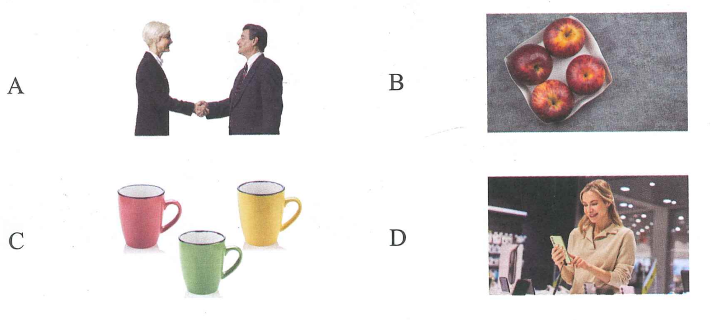
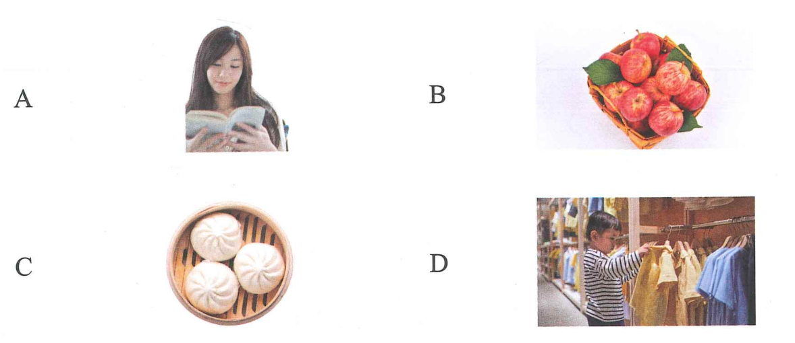

三、听力 · Phần nghe
🔊 Bài nghe mô phỏng Bài 10
第一部分 · Câu 1–3
Ví dụ:sān ge píngguǒ三个苹果 → C
1.
2.
3.
第二部分 · Câu 4–5
Ví dụ: Jīntiān tiānqì zěnmeyàng今天天气怎么样？
A. fēicháng rè非常热B. hěn hǎotīng很好听C. zài hē shuǐ在喝水
Đáp án ví dụ: A
4.
5.
第三部分 · Câu 6–8
Ví dụ:男Nǐ hǎo你好！Hěn gāoxìng rènshi nǐ很高兴认识你。

6.
7.
8.
第四部分 · Câu 9–10
Ví dụ:Xiàwǔ wǒ qù chāoshì, wǒ xiǎng mǎi yìxiē shuǐguǒ下午我去超市，我想买一些水果。
★ Shuōhuàrén xiàwǔ qù nǎr说话人下午去哪儿？
A. chāoshì超市B. yīyuàn医院C. xuéxiào学校
Đáp án ví dụ: A
9.
10.
四、阅读 · Phần đọc
第一部分 · Câu 11–13

Ví dụ: Wǒ hěn xǐhuan zhè běn shū我很喜欢这本书。→ A
11. Qǐngwèn, bāozi duōshao qián yí ge请问，包子多少钱一个？
12. Zhèbian de píngguǒ zhēn piányi这边的苹果真便宜。
13. Zhèxiē shì nán háizi chuān de yīfu这些是男孩子穿的衣服。
第二部分 · Câu 14–16
A. Shí kuài qián十块钱。B. Duìbuqǐ, méiyǒu对不起，没有。C. Zài nàbian在那边。D. Hǎo de, xièxie好的，谢谢！
Ví dụ: Nǐ hē shuǐ ma你喝水吗？→ D
14. Nǚ háizi de yīfu zài nǎr女孩子的衣服在哪儿？
15. Bēizi duōshao qián yí ge杯子多少钱一个？
16. Qǐngwèn zhèr yǒu niúnǎi ma请问这儿有牛奶吗？
第三部分 · Câu 17–18
A. chuān穿B. kuài块C. míngzi名字
Ví dụ: Nǐ jiào shénme你叫什么（C）？
17. Nàxiē píngguǒ liǎng那些苹果两（ ）qián yì jīn, hěn piányi钱一斤，很便宜。
18.
男Zhè jiàn yīfu zěnmeyàng这件衣服怎么样？
女Hěn hǎokàn, shí suì de nán háizi néng很好看，十岁的男孩子能（ ）。
第四部分 · Câu 19–20
Ví dụ:Qǐngwèn xiànzài jǐ diǎn le请问现在几点了？
★ Shuōhuàrén xiǎng zhīdao shénme说话人想知道什么？
A. shíjiān时间B. míngzi名字C. fángjiānhào房间号
Đáp án ví dụ: A
19.
Wǒ méiyǒu shǒujī, jīntiān xiǎng qù shāngdiàn mǎi yí ge我没有手机，今天想去商店买一个。
★ Shuōhuàrén xiǎng mǎi shénme说话人想买什么？
20.
Zhè jiàn yīfu hěn hǎokàn, nǐ yě néng chuān, mǎi yí jiàn ba这件衣服很好看，你也能穿，买一件吧。
★ Nà jiàn yīfu那件衣服：